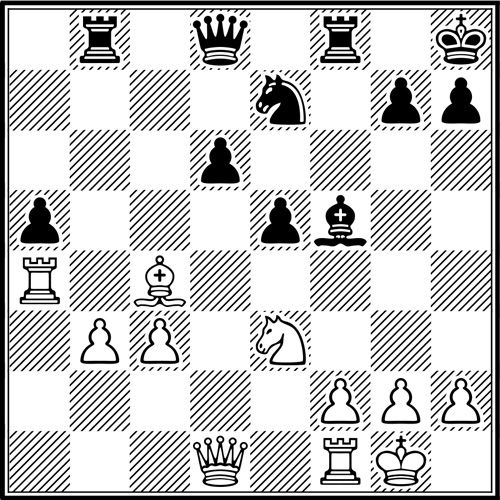

Diagram 410
[Level: 1400 - 2000]

White to move
This is a position from the Sveshnikov Sicilian. Both sides played the opening logically and White has emerged with a small edge. Both sides have active pieces. Black has some pressure against b3 and would love to get his central pawn majority moving by …d6-d5. Though White has definite designs against a5, his immediate goal is to stop black’s dream of …d6-d5 so that the d-pawn will remain a static weakness instead of a dynamic plus. Once he does that, he can pile up on d6 and place Black permanently on the defensive. What moves best strive to achieve these two goals (i.e., to stop …d5 and hit d6)?